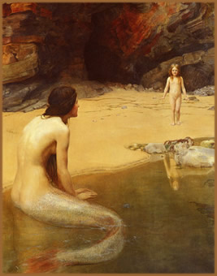
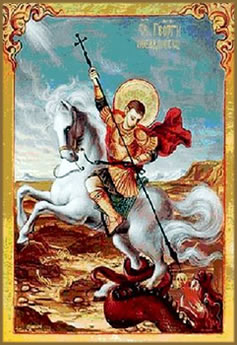
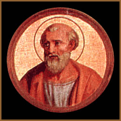

O sobrenatural é um
dos componentes mais interessantes do imaginário
medieval. Inspira-se tanto nas referências pagãs
da antiguidade, mitologia celta e na bíblia como
nas citações de Plínio e nos relatos
de viagens exóticas, como as de Marco Pólo.
Presente em grande parte
das antigas narrativas, cria uma introdução
muito atraente para os aspectos míticos e irreais
das histórias de amor e enquadra-se perfeitamente
na mentalidade do homem medieval, onde tudo é simbólico.
O imaginário
medieval herdou do greco-romano todo o tipo de monstros
híbridos, meio homem e meio animal, como os centauros,
sereias ou esfinges; ainda grifos, dragões e unicórnios.
A partir do século XI estes seres tornaram-se meros
elementos decorativos. Após este período são
encontradas citações de gigantes em romances
arturianos e, em seguida, sobrevivendo apenas na crença
de uma existência longínqua e fantasiosa.
Um aspecto interessante é
a forma que o pensamento cristão medieval se adaptava
à suposta existência de seres ambíguos:
se estes seres possuíam alma como os humanos e se
seria possível sua salvação no reino
divino.
A
Rainha dos Mares
Na história antiga,
especificamente na obra A Odisséia, de Homero,
a sereia é uma mulher da cabeça aos pés.
Apenas no período medieval, provavelmente sob influência
do folclore celta, que a sereia ganha o status de ser híbrido:
meio peixe e meio humano.
Em
uma das lendas, vivia, por volta do ano 90 d.C, na Irlanda,
uma jovem de nome Liban. Um dia, ao banhar-se no Lago Neagh,
descuidou-se e, por pouco, escapou da morte por afogamento.
Assim, após esta experiência, a jovem pediu
a Deus que transformasse suas pernas em cauda de salmão.
Seu cão também foi transformado em lontra
pra fazer-lhe companhia. E assim manteve-se por trezentos
anos.
Um dia, porém, a jovem
decidiu voltar a ser humana e pediu a um mensageiro que
levasse seu pedido a Deus. Seu desejo foi ouvido e Liban
voltou a ser mulher. Porém, as "portas do paraíso
foram abertas" (com uma possível interpretação
da morte de Liban) e a jovem passou a ser venerada como
Murgelt: A Sereia dos Mares.
Uma outra versão,
um pouco mais complexa, aborda a mesma lenda e seus paradoxos
sob a perspectiva cristã. Originada no século
VI e registrada por escrito apenas no século XVII,
a lenda conta que a jovem, também de nome Liban,
era uma princesa sobrevivente de uma enchente ocorrida quando
um poço sagrado transbordou. Liban, juntamente com
seu cão companheiro, refugiou-se em uma gruta, e
pediu à Deusa Dana que a transforma-se em um salmão,
para que pudesse ser livre como os peixes.
O pedido da princesa foi
parcialmente atendido, pois sua transfiguração
não foi completa: permaneceu humana da cintura pra
cima e suas pernas foram substituídas por uma cauda
de peixe. Enquanto seu cão foi transformado em um
leão marinho.
Assim Liban viveu por trezentos
anos até que foi encontrada por um padre que navegava
em direção à Roma. O clérigo
convenceu a princesa a segui-lo até terra firme e
lá Liban foi convertida ao cristianismo. Assim viveu
por mais trezentos anos. Após sua morte passou a
ser reverenciada como santa sob o nome de Murgelt (ou Murgen).
Por ter nascido humana, sua alma foi para o Paraíso.
São
Jorge, Preste João e os Dragões
O dragão, o corpo
da serpente, com uma longa cauda enrolada sobre si mesma
e, mais freqüentemente, asas, é o símbolo
da luta entre as forças do bem e do mal narrado na
Bíblia. Situações como essa são
muito comuns nas narrativas de mártires como São
Jorge que derrota o dragão e salva a filha do Rei
da Fenícia. Assim como São Miguel e São
Germain que perseguem serpentes aladas.
Mas
onde vivem os dragões? Onde se encontram essas criaturas
míticas que são tão repugnantes e ao
mesmo tempo fascinantes?
O lendário rei cristão
Preste João (Padre João) teria afirmado, através
de cartas de autoria duvidosa, que dragões, grifos,
unicórnios e centauros; além da Árvore
da Vida, o Elixir da Juventude e outras fantasias
habitavam seu reino. Mas o próprio Preste João
parece não ter sido mais do que uma lenda: o arquétipo
do generoso rei que governava um país repleto de
mistérios e maravilhas.
A origem da existência
fabulosa de Preste João pode ter nascido da imagem
do líder nestoriano Johannes Presbyter, que no século
XII construiu um poderoso reino na Tartária, região
atual da Ásia Central. No entanto, já no século
XV, D. João II, rei de Portugal, munido de informações
que indicavam que o reino de Preste João situava-se
ao noroeste da África, precisamente na Etiópia,
enviou os exploradores Afonso de Paiva e Pero de Covilhã
ao local. Afonso faleceu durante a expedição,
mas Pero chegou ao destino.
A Etiópia não
era o reino fantástico de Preste João. Não
era habitado por seres míticos nem encontrava-se
poções de vida eterna e riqueza abundante.
Mas Pero de Covilhã, atendendo ao convite do príncipe
Naod, que assumiu o reino após a morte de Alexandre,
decidiu permanecer por lá.
Uma nova expedição
lusitana foi enviada à Etiópia vinte anos
mais tarde com o objetivo de repatriar os portugueses que
se estabeleceram na África. Pero de Covilhã
recusou-se retornar à Portugal e passou o resto de
seus dias na Etiópia. O clérigo Francisco
Álvares, integrante desta segunda expedição,
escreveu a obra intitulada Verdadeira informação
das terras do Preste João nas Índias
e associou os reis etíopes à imagem fantástica
de Preste João e seu reino à Etiópia.
Foi assim que a lenda de Preste João foi anexada
à biografia de um governante real.
A
lenda do Judeu Errante
Provavelmente trazida do
Oriente após as Cruzadas, a lenda do Judeu Errante
tem seus primeiros registros históricos em 1228 e
perdura-se como uma narrativa medieval que se estende até
os dias de hoje como uma parábola cristã.
A lenda conta, em uma de
suas versões, que Cristo,
enquanto caminhava levando a cruz em seu martírio,
teria feito uma breve pausa para repouso e pediu a um sapateiro
de nome Ahsverus que lhe desse um pouco de água.
O sapateiro recusou-se e zombou de Cristo dizendo: "Se
és filho de Deus, faça brotar água
do chão". Cristo, por sua vez, disse-lhe: "Eu
caminho pelo meu martírio. Mas tu caminharás
até que eu volte". Assim, Ahsverus envelheceu
mas nunca morreu e passou a peregrinar pelo mundo esperando
a volta de Cristo e o Juízo Final para que enfim
possa descansar.
Em outras versões, Cristo exaurido teria caído
em frente à porta do sapateiro (que recebe outros
nomes além de Ahsverus) e o artesão espicaçou-o
com os pés zombando de seu sofrimento. Em seguida,
Cristo lançou-lhe praga semelhante à versão
anterior. Porém, desta vez, além de peregrinar
pela Terra desde então, o sapateiro também
leva em sua testa uma chaga em forma de cruz que sangra
constantemente e uma faixa vermelha amarrada a cabeça
para proteger-lhe o ferimento.
O
Purgatório de São Patrício
Nascido
no século IV na Grã-Bretanha, São Patrício
é padroeiro da Irlanda e personagem de um dos contos
mais populares na Europa Medieval.
Narra a lenda que, orientado
por Cristo, São Patrício encontrou um "buraco"
(que pode ser interpretado como uma gruta ou um poço)
que dava acesso direto ao purgatório. Como agradecimento,
erigiu ali uma igreja e um mosteiro.
Assim, todos aqueles que
desejassem, poderiam adentrar a gruta (ou poço) e,
se conseguir retornar, teriam todos os seus pecados perdoados.
Muitos ousavam penetrar a gruta mas não retornavam.
Até que um cavaleiro inglês de nome Owen, que
trazia muitos pecados em sua alma, entrou na gruta e algum
tempo depois retornou. Sir Owen disse que vários
demônios tentaram afligi-lo mas sempre invocou o nome
de Cristo e os demônios se afastavam. Owen viu o paraíso
e as almas torturadas dos pecadores; viu demônios
e outras criaturas bestiais, mas retornou vitorioso.
A
Fada Melusina
A fada Melusina é
uma referência freqüente no repertório
das lendas medievais. Assim, também recebe várias
interpretações de acordo com a lenda em que
surge, região e período. De uma forma mais
ampla, Merlusina é uma fada que tem cauda de peixe
(semelhante às sereias) e asas de morcego expelindo
fumaça pela boca.
As versões mais significativas
de suas lendas datam do século XIV. Tudo tem início
quando o Rei Elynas, durante uma caçada, encontra
na floresta uma bela dama de nome Presina. Elynas apaixona-se
por ela e ambos se casam. Porém, Presina impõe
a condição de que, quando tivessem filhos,
Elynas não podia acompanhar o nascimento nem a visse
banhando seus filhos. Presina deu a luz a trigêmeas.
Certa vez, Elynas, movido
pela curiosidade, observou Presina banhando as crianças.
O trato foi quebrado e a dama fugiu com suas filhas para
a terra encantada de Avalon.
Muitos anos depois, Melusina,
a mais velha das trigêmeas questionou sua mãe
o fato de terem se refugiado em Avalon e nunca mais terem
visto o próprio pai. Presina contou-lhe sobre o trato
que fora desfeito. Melusina e suas irmãs foram de
encontro a Elynas com o objetivo de vingar-se. Elynas foi
capturado e trancafiado em uma torre junto de suas riquezas.
Enraivecida pelo desrespeito ao próprio pai, Presina
lança um feitiço sobre as próprias
filhas e condena Melusina a transformar-se em serpente da
cintura pra baixo todos os sábados.
Assim, finalmente, Melusina
conhece Raymond de Poytou numa floresta da França.
Ambos casam-se sob a condição de que Raymond
nunca poderia observar Melusina banhando-se aos sábados.
Raymond também quebrou a promessa e descobriu o segredo
de sua esposa. No entanto, ambos mantiveram-se casados.
Apenas quando, enfurecido, Raymond ofendeu a esposa chamando-a
de serpente perante a corte, Melusina transformou-se em
um dragão, deu ao marido dois anéis mágicos
e partiu para sempre.
Em outras versões,
Melusina foge quando é flagrada pelo marido durante
o banho. Ainda, Melusina é filha de um demônio
com um ser humano e a ela também é atribuída
a imagem da "sereia" que rouba o filho de Lancelot,
nas lendas arturianas.
O
sentido moral das lendas
Lendas e parábolas
ajudam a construir a personalidade de um povo, de um período
histórico e de uma cultura. Também ajuda a
compreender cada um destes elementos. As inevitáveis
transfigurações destas lendas durante o tempo,
por um lado, enriquecem o imaginário e acrescentam
variações e significados importantes; por
outro, podem deturpar o seu sentido original.
De qualquer forma, é
a solidificação do sentido moral de cada conto
e de cada personagem que, adequadamente interpretados, ajudam
a compreender a sociedade e a cultura contemporânea
e fazem lembrar que, em algum tempo, tudo o que hoje é
realidade, poderá se tornar uma lenda.
Por Spectrum
Referência
principal: http://www.histoire-pour-tous.fr